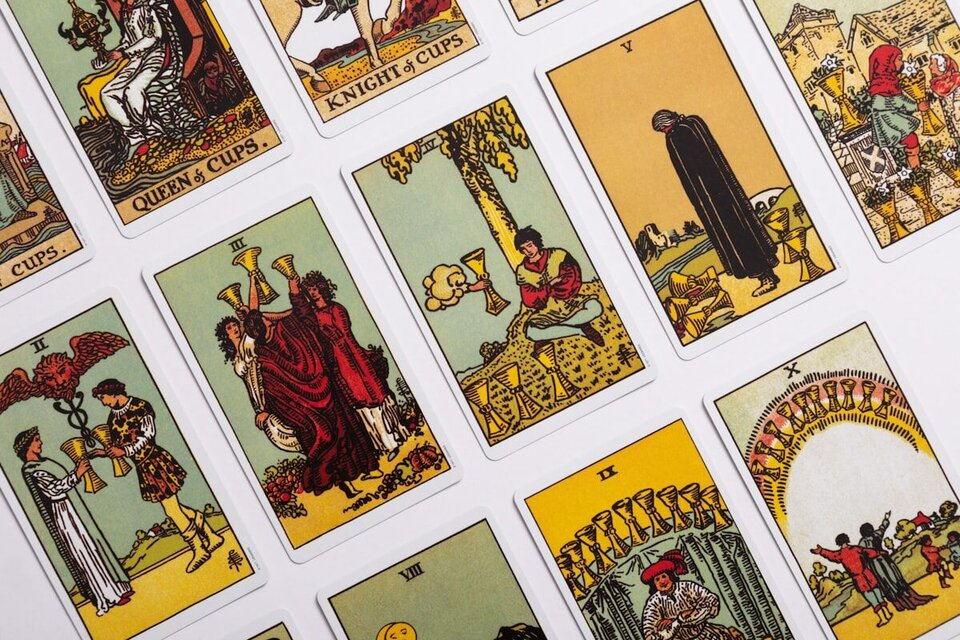

Trusted by thousands of callers nationwide
Career Tarot Reading by Phone - Clarity on Your Next Move, 24/7
Stuck between staying and leaping? A career tarot reading lays out what's really driving the decision so you can make it with a clear head. Every reader on our line is hand-vetted by our master psychics - connect in under 60 seconds. Your first minute is $1 and you can hang up anytime.
- Hand-vetted readers
- Available 24/7
- Hang up anytime
Call and speak with a live reader for a career tarot reading that gets past the pros-and-cons list to what your gut already knows. No appointment, no waiting - first-time callers get an introductory rate of $1 per minute, or 15 minutes for $10, and you can hang up the moment you have your answer.

What Is a Career Tarot Reading?
A career tarot reading uses the cards to look honestly at your work life - a job offer you're weighing, a change you keep circling, the thing that's quietly stalling your progress, and where your current path is actually heading. Your reader shuffles and lays out cards from the 78-card deck, then reads them against the question you bring. It isn't a crystal ball that hands you a job title. It's a way to see the situation clearly - including the parts you've been talking yourself out of noticing - so you can act instead of stall.
How Does a Career Tarot Reading Work by Phone?
Your reader pulls and interprets the cards on their end while tuning into your energy through your voice and your intention. The tarot responds to focus, not to location - so a phone career tarot reading is just as sharp as one in person. You explain the decision or the stuck point, your reader asks a clarifying question or two, lays the spread, and walks you through what each card says about you, the opportunity, and the road ahead.
What Questions Should I Ask in a Career Tarot Reading?
The question you bring shapes the value you get back. Open-ended "what" and "how" questions beat yes-or-no ones every time, because they hand you something to do rather than a verdict to wait for. Strong framings:
"What do I need to know about this job offer?"
Surfaces what's really underneath the opportunity.
"How can I move toward work that actually fits me?"
Points to the next concrete step.
"What's blocking my progress right now?"
Names the obstacle so you can address it.
"What am I not seeing about my current role?"
Reveals the blind spot.
"What would help me get the recognition I want?"
Direction on visibility and growth.
"Is it time to change direction, and what would that take?"
Clarity on timing and readiness.
Who Is the Best Career Tarot Reader to Call?
The best reader for a work decision is one who is genuinely intuitive, grounded, and willing to tell you the part you'd rather skip. Every reader on our line is hand-vetted by our master psychics, so you're not rolling the dice on a stranger. Tell us you want career and money guidance and we'll match you with the reader whose strength is exactly that - usually in under 60 seconds. If the fit isn't right, hang up anytime, and our 100% satisfaction promise stands behind the call.
What Do I Do If the Cards Point to Big Change?
Don't panic - a card that signals upheaval is showing you momentum, not doom. The Tower, for instance, clears what was already unstable; it's uncomfortable, but it's rarely random. Tarot describes the energy that's in motion right now, and that energy bends the moment you make a different choice. A skilled reader won't drop a heavy card and leave you hanging - they'll explain what's driving it and what you can do to steer the change instead of being caught by it. If the reading reveals it's really about money pressure underneath the job itself, your reader may suggest a focused money and prosperity reading.
Common Career Situations a Tarot Reading Can Help With
Callers reach for a career tarot reading at the moments that matter most:
"Should I take this offer or stay put?"
See what each path is really carrying.
"Is this the year I finally change careers?"
Read the timing and your readiness.
"Why does my hard work keep going unseen?"
Name the pattern blocking recognition.
"Is my own business worth the risk?"
Honest read on the venture's energy.
"Should I trust this new manager or team?"
What's underneath the dynamic.
"What's my work actually meant to be?"
Direction when nothing feels right.
Career Tarot Cards and What They Often Mean
No single card decides your career - meaning depends on its position, the cards around it, and your question. Still, a handful show up often in work readings. The Eight of Pentacles is dedicated skill-building and craft. The Three of Pentacles is collaboration and earning recognition. The Two of Pentacles is juggling and the need to rebalance. The Wheel of Fortune signals a turning point and shifting circumstances. The Eight of Cups is walking away from something that no longer fits to pursue what matters. The Ace of Pentacles is a fresh, tangible opportunity taking root. Your reader weaves these into a story - the deck never answers in one word. If you want the broader background, you can read about the history and structure of the tarot.
Can a Career Tarot Reading Help Me Decide Whether to Change Jobs?
Yes - that's one of the most common reasons people call. The cards show what's actually driving the urge to leave (growth, burnout, fear, or a real misfit), what's underneath the opportunity you're eyeing, and the likely direction each path trends if you keep going as you are. What the reading won't do is decide for you; it hands you a clear-eyed picture so the choice is yours, made from clarity instead of anxiety. That's usually worth more than a snap yes or no, because it sticks once you hang up.
Career Tarot Reading vs. Money Reading vs. Life Path Reading
They overlap, but each leads with a different focus. A career tarot reading centers on work decisions and direction through the structured language of the cards. A money and prosperity reading drills into income, finances, and abundance blocks. A life path reading zooms all the way out to purpose and the bigger arc of your journey. Many callers start with career tarot for a concrete decision, then go broader if the real question turns out to be deeper.
How to Prepare for Your Career Tarot Reading
Find a quiet space, take a few slow breaths, and pin down the one decision or stuck point you most want clarity on before you dial - a focused question gives a focused answer. Jot down the options if it helps. Stay open instead of hunting for permission to do what you'd already decided; the most useful readings are the ones that tell you something new. And the practical part: first-time callers pay $1 per minute, you can do 15 minutes for $10, and you can hang up the second you have what you need.
Make Your Next Move With a Clear Head
The cards will show you what your gut already suspects about the decision. We'll connect you with the right hand-vetted reader in under 60 seconds. $1/min first call · 15 minutes for $10 · hang up anytime · 100% satisfaction promise.
Call (888) 920-6662 NowWhat Callers Say About Their Career Tarot Reading
"I'd been agonizing over an offer for two weeks. Ten minutes on the phone and the cards named the exact fear that was holding me back. I took the job and haven't second-guessed it since."
"She didn't tell me what I wanted to hear - she told me why my work kept getting overlooked and what to change. That call paid for itself ten times over."
Explore every reading type on our phone psychic readings hub, or look at the money side with a money and prosperity reading.
Career Tarot Reading - Frequently Asked Questions
What is a career tarot reading?
It uses the cards to look at your work life - a decision, a change you're weighing, what's stalling progress, and where your path is heading.
What questions should I ask in a career tarot reading?
Open-ended "what" and "how" questions, like "What do I need to know about this job offer?" - they give you direction you can act on.
Can it help me decide whether to change jobs?
Yes - it shows what's driving the urge to leave, what's underneath the opportunity, and the likely direction of each path, so you decide with clarity.
Does a career tarot reading work over the phone?
Yes. Your reader pulls the cards on their end and connects through your voice and intention; distance doesn't affect accuracy.
How much does it cost?
First-time callers pay $1/min, or 15 minutes for $10. Returning callers pay the per-minute rate, and you can hang up anytime.
Is a career tarot reading accurate?
It reflects the energy and patterns around your work life now. It's most accurate as honest direction, and the clearer your question, the clearer the answer.
Can the cards tell me if I'll get the job?
They show the energy and likely trend, plus what would strengthen your odds - not a guaranteed yes. The choices you make still move the outcome.
How often should I get a career tarot reading?
When something genuinely shifts - an offer, a turning point, a stall. Re-reading the same question repeatedly tends to cloud it rather than clear it.
Get Your Career Tarot Reading Now
Here's what happens when you call: you're connected to a hand-vetted reader in under 60 seconds, they pull the cards on your decision, and you hang up knowing your next move.
- Hand-vetted reader
- Connected in under 60 seconds
- $1/min first call · 15 min for $10
- Hang up anytime
- 100% satisfaction promise